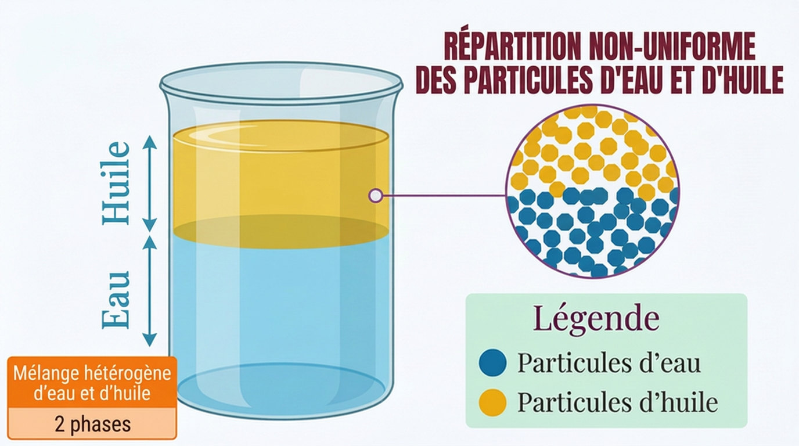
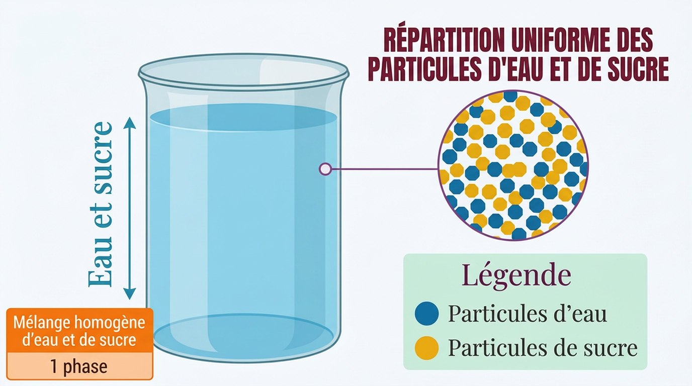
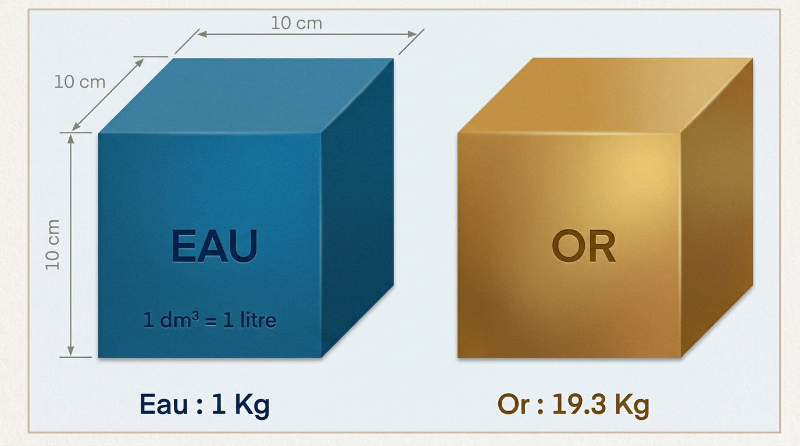

La matière à l'échelle macroscopique
Ce chapitre sera débloqué en fin de séquence, au rythme de la classe. Le code de déblocage est transmis via le cahier de textes — il figure aussi en bas de ta fiche de cours.
Sommaire du chapitre
Physique-Chimie · Seconde générale · Thème 1 — Constitution et transformations de la matière
La matière à l'échelle macroscopique
Thème 1 · Chapitre 1 — cours & exercices corrigés
01 Entités chimiques
Prends un verre d'eau du robinet, une pièce de monnaie, l'air que tu respires en lisant cette phrase. Trois objets ordinaires, et pourtant : l'un est un corps pur, l'autre un alliage, le troisième un mélange de gaz. À l'œil nu, rien ne les distingue — il faut savoir de quoi ils sont faits.
Tout ce chapitre sert à ça : mettre des mots justes, puis des nombres, sur la composition de la matière. Combien de carbone dans une marmite en fonte ? Combien de sel peut-on encore dissoudre avant que ça ne parte au fond ? Et si on te tend un liquide inconnu, comment sais-tu ce que c'est ?
Commençons par le plus petit : ce qui compose la matière.
La matière est constituée d'entités chimiques, terme générique désignant ses composants microscopiques : atomes, molécules, ions. Ces trois mots ne sont pas interchangeables — chacun désigne quelque chose de précis, et le DS commence généralement par vérifier que tu les distingues.
L'atome est une particule neutre d'un élément chimique qui forme la plus petite quantité susceptible de se combiner (ex : C, Na, U…).
La molécule est un ensemble neutre d'atomes identiques ou non, unis les uns aux autres par le biais de liaisons chimiques (ex : H2O, H2, CH4…).
Un ion est une entité chimique chargée que l'on trouve en solution. Les ions négatifs sont appelés anions (ex : Cl−, SO42−, F−…) et les ions positifs cations (ex : H+, Mg2+, H3O+…).

Le vocabulaire est posé. Reste à l'appliquer — c'est tout l'objet de l'exercice qui suit, et le piège n'est pas là où on l'attend.
Classer ces entités chimiques selon qu'il s'agisse d'un atome, d'une molécule, d'un anion ou d'un cation.
Cu | CU | Ag+ | H | CO2 | O2− | O2 | Ca | NH4+ | NH3 | N | Cu2+ | CO | C | SiO3 | K+
Voir la correction
| Atome | Molécule | Ion | |
|---|---|---|---|
| Anion | Cation | ||
| Cu | H | Ca N | C |
CU | CO2 O2 | NH3 | SiO3 CO |
O2− | Ag+ | Cu2+ NH4+ | K+ |
Attention au piège de l'écriture : Cu (C majuscule, u minuscule) est l'atome de cuivre, tandis que CU (deux majuscules) désigne un assemblage d'un atome de carbone et d'un atome d'uranium — donc une molécule !
En chimie, une majuscule ouvre toujours un symbole d'élément, et la minuscule qui la suit appartient au même symbole. Co est le cobalt, CO le monoxyde de carbone. Une lettre mal formée à la copie, et la réponse change de sens : écris tes symboles chimiques lisiblement.
02 Corps purs
On sait nommer les briques. Assemblons-les : que se passe-t-il quand un échantillon ne contient qu'une seule sorte d'entité ?
Une espèce chimique est un ensemble d'entités chimiques.
Un corps pur est constitué d'une seule espèce chimique.
On distingue deux familles de corps purs. Sous chaque définition, la figure montre la même chose à deux échelles : l'échantillon que l'on tient dans la main, et ce qu'on y verrait si l'on pouvait zoomer jusqu'aux entités.
Un corps pur simple est formé d'un seul type d'élément chimique.
Un corps pur composé, ou composé chimique, est formé d'au moins deux types d'éléments chimiques.
Un jus « pur fruit » ou une eau « pure » du langage courant sont en réalité des mélanges. En chimie, un corps pur ne contient qu'une seule espèce chimique : l'eau minérale, qui contient des ions, n'est pas un corps pur.
Classer ces espèces chimiques selon qu'il s'agisse d'un corps pur simple ou composé.
Cu | CU | Ag+ | H | NH4+ | NH3 | N | Cu2+ | CO2 | O2− | O2 | Ca | CO | C | SiO3 | K+
Voir la correction
| Corps pur simple | Corps pur composé |
|---|---|
| Cu | Ag+ | H | N | Cu2+ O2 | O2− | Ca | C | K+ |
CU | CO2 NH4+ | NH3 | SiO3 CO |
03 Mélanges
Une seule espèce chimique : corps pur. Dès qu'il y en a deux, on change de catégorie — et l'œil suffit souvent à trancher.
Un mélange est constitué de plusieurs espèces chimiques.
Il y en a de deux types, et la distinction se fait sur ce que l'on voit.
Un mélange hétérogène est constitué de plusieurs phases, c'est-à-dire plusieurs corps que l'on peut distinguer.

Un mélange homogène ne présente qu'une seule phase : les espèces chimiques y sont indiscernables.

Le cas des liquides porte un nom particulier.
Un mélange de liquides miscibles ne fait apparaître qu'une seule phase : c'est un mélange homogène.
Un mélange de liquides non miscibles fait apparaître plusieurs phases : c'est un mélange hétérogène.
Quatre catégories en tout, deux pour les corps purs et deux pour les mélanges. Le schéma qui suit les tient ensemble : c'est celui à retenir.
 ✎
✎
04 Composition d'un mélange
Dire « c'est un mélange » ne suffit pas à un chimiste : encore faut-il savoir en quelle proportion. Deux façons de compter, selon ce que l'on mesure.
Lorsqu'on a un mélange, on peut donner par exemple sa composition massique, qui précise le pourcentage de la masse de chaque espèce par rapport à la masse totale, ou sa composition volumique, qui précise le pourcentage du volume qu'occupe chaque espèce par rapport au volume total.
m masse de l'espèce · g
mmélange masse totale · g
V volume de l'espèce · L
Vmélange volume total · L
A · Un exemple de composition massique : la fonte
La fonte est un alliage — un mélange en phase solide. C'est un mélange de fer et de carbone, et c'est la proportion de carbone qui fait la différence entre une fonte et un acier.


1 — Quelle masse de carbone y a-t-il dans une marmite en fonte de 2,5 kg composée à 4 % de carbone ?
2 — Une alliance en or blanc de 5 g est composée de 1000 mg d'or, le reste étant de l'argent. Donner la composition massique de cet alliage.
Donnée : %m = mmmélange × 100

Voir la correction
mC = mmarmite × %C100
A.N. : mC = 2,5 × 4100 = 0,1 kg = 100 g
mor = 1000 mg = 1 g
%Or = mormalliance × 100 et %Ag = 100 − %Or
A.N. : %Or = 15 × 100 = 20 % et %Ag = 100 − 20 = 80 %
L'alliance est composée à 20 % en masse d'or et 80 % d'argent.
B · Un exemple de composition volumique : l'air
L'air que tu respires n'est pas une espèce chimique mais un mélange de gaz, et on le décrit habituellement par sa composition volumique. Sa composition figure au programme : elle s'apprend.
L'air est un mélange de gaz. En volume, il contient environ 78 % de diazote (N2) et 21 % de dioxygène (O2) ; le dernier pour cent réunit les autres gaz, dont l'argon (Ar) à 0,93 % et le dioxyde de carbone (CO2) à 0,04 %.
Sa masse volumique vaut environ ρair = 1,2 g·L−1.
Autrement dit : sur cinq bouffées d'air, quatre sont du diazote, qui ne sert à rien à ta respiration — seule la cinquième, le dioxygène, est utilisée par ton organisme.
Les deux valeurs 78 % et 21 % sont à connaître par cœur : elles tombent au DS.
1 — L'air est-il un mélange ou un corps pur ? Justifier en précisant votre réponse.
2 — Classer chaque espèce chimique composant l'air selon qu'il s'agisse d'un corps pur simple ou composé.
La composition de l'air est donnée par l'Image 8 ci-dessus.
Voir la correction
1 — L'air est un mélange : il est composé de plusieurs espèces chimiques (N2, O2, Ar, etc.).
| Corps pur simple | Corps pur composé |
|---|---|
| N2 | Ar | Ne | He | Kr | H2 O2 | Xe | O3 | Rn |
CO2 |
Quel volume d'argon trouve-t-on dans 1000 m3 d'air ?
Données : %V = VVmélange × 100 · %Ar = 0,93 % (Image 8)
Voir la correction
VAr = Vair × %Ar100
A.N. : VAr = 1000 × 0,93100 = 9,3 m3
05 Solubilité
On sait décrire un mélange homogène. Mais peut-on en dissoudre indéfiniment ? Non — et la limite porte un nom.
La solubilité, notée s, d'une espèce chimique est la masse maximale de cette espèce que l'on peut dissoudre dans un volume donné d'une autre espèce chimique liquide (ex : eau). Elle s'exprime le plus souvent en g·L−1.
mmax masse maximale dissoute · g
V volume de solvant · L
Tant que la masse dissoute reste inférieure à cette limite, tout disparaît et le mélange est homogène. Dès qu'on la dépasse, le surplus ne se dissout plus : il tombe au fond, et le mélange redevient hétérogène. On dit alors que la solution est saturée.
 ✎
✎
La solubilité n'est pas une constante : elle dépend de l'espèce, du solvant, de la pression — et beaucoup de la température. C'est ce que vont montrer les deux documents de l'exercice suivant.
À 0 °C, la solubilité du sel dans l'eau est s = 347 g·L−1. Quelle masse de sel peut-on introduire dans une bouteille de 1,5 L avant d'atteindre la saturation ?
Voir la correction
s = mmaxV ⇔ mmax = s × V
A.N. : mmax = 347 × 1,5 = 520,5 g
Quelle masse de diazote (N2) peut-on introduire au maximum dans 500 mL d'eau à 35 °C ?
| Gaz | s (mg·L−1) |
|---|---|
| N2 | 23,2 |
| O2 | 54,3 |
| CO2 | 2 318 |
| H2S | 5 112 |
| CH4 | 32,5 |
| H2 | 1,6 |
Voir la correction
Sur l'Image 11, à 35 °C, on évalue sN₂ = 0,015 g·L−1. Et V = 500 mL = 0,5 L.
mmax(N2) = sN₂ × V
A.N. : mmax(N2) = 0,015 × 0,5 = 7,5 × 10−3 g = 7,5 mg
Le tableau de l'Image 10 donne la même grandeur à 10 °C : 23,2 mg·L−1, soit 0,0232 g·L−1 — plus élevée qu'à 35 °C. Pour un gaz, la solubilité diminue quand la température augmente ; c'est l'inverse de ce que fait le sucre dans l'eau.
06 Masse volumique et densité
Deux échantillons de même volume n'ont pas la même masse. Cette différence-là se mesure, et elle permet d'identifier une espèce.
La masse volumique ρ d'un corps est le rapport de la masse de ce corps sur le volume de ce corps.
m masse · g
V volume · cm3
La densité d d'une espèce chimique est le rapport de sa masse volumique par une masse volumique de référence. La densité est un nombre sans unité.
ρ masse volumique de l'espèce
ρréf liquide ou solide : ρeau = 1 g·cm−3
ρréf gaz : ρair ≈ 1,2 g·L−1
La densité se lit comme un rapport direct : un corps de densité 19,3 est 19,3 fois plus lourd que le même volume d'eau. C'est tout l'intérêt de la grandeur — elle compare sans avoir à manipuler d'unité.
Un litre d'eau pèse 1 kg : cette valeur est à connaître, et elle sert de référence à toutes les autres.

Ni la masse volumique ni la densité ne sont figées : elles dépendent de la température. En général, la masse volumique diminue quand la température augmente — l'échantillon se dilate sans changer de masse. C'est vrai de l'eau pure comme de l'eau de mer, cette dernière étant toujours plus dense parce qu'elle contient du sel dissous.
Calculer la masse volumique de l'huile à l'aide du montage ci-contre, puis en déduire sa densité.
Données : ρ = mV · ρeau = 1,00 g·cm−3 · 1 mL = 1 cm3
Voir la correction
D'après l'Image 14 : m = 184 g et V = 200 mL = 200 cm3.
ρ = mV et d = ρρeau
A.N. : ρ = 184200 = 0,92 g·cm−3 et d = 0,921,00 = 0,92
d < 1 : l'huile est moins dense que l'eau — c'est pourquoi elle surnage dans le bécher de l'Image 4.
Quelle est la masse de 3 m3 de béton ?
Donnée : ρbéton = 2,4 g·cm−3
Voir la correction
V = 3 m3 = 3 × 106 cm3
ρ = mV ⇔ m = ρ × V
A.N. : m = 2,4 × 3 × 106 = 7,2 × 106 g = 7 200 kg = 7,2 t
07 Identifier une espèce chimique
Tout ce qui précède converge ici : on te tend un flacon sans étiquette. Comment savoir ce qu'il contient ?
Trois voies sont possibles, et elles se complètent. On peut comparer ses propriétés physiques (solubilité, masse volumique, températures de changement d'état) à des valeurs de référence ; on peut réaliser des tests chimiques (test des ions, eau de chaux…) ; on peut enfin s'appuyer sur ses aspects physiques — couleur, odeur, état à température ambiante. Aucune de ces voies ne suffit seule : c'est leur faisceau qui identifie l'espèce.
 ✎
✎
A · Les tests d'espèces chimiques
Quelques tests sont au programme et doivent être connus : ils identifient le dihydrogène, le dioxygène, le dioxyde de carbone et l'eau.


Le test à l'eau de chaux identifie le dioxyde de carbone : on fait barboter le gaz à tester dans de l'eau de chaux limpide. Si elle se trouble, c'est du CO2.
Le test du dioxygène, lui, se fait à la bûchette incandescente : elle se rallume en présence de O2.

B · Les tests des ions
Pour les ions en solution, le principe est toujours le même : on ajoute un réactif, et l'ion cherché forme un précipité — un solide qui apparaît dans la solution — dont la couleur signe sa présence.
 ✎
✎
Le même tableau en version texte (pour rechercher, agrandir ou imprimer)
| Ion à tester | Cl⁻ | SO₄²⁻ | Cu²⁺ | Fe²⁺ | Fe³⁺ | Zn²⁺ | Mg²⁺ | Ca²⁺ |
|---|---|---|---|---|---|---|---|---|
| Nom | Chlorure | Sulfate | Cuivre II | Fer II | Fer III | Zinc | Magnésium | Calcium |
| Couleur de la solution | Incolore | Bleu | Vert pâle | Jaune pâle | Incolore | |||
| Réactif | Nitrate d'argent | Chlorure de baryum | Hydroxyde de sodium | Oxalate d'ammonium | ||||
| Précipité | Blanc (noircit à la lumière) |
Blanc | Bleu | Vert | Rouille | Blanc | Blanc | Blanc |
Un seul test ne conclut presque jamais. L'exercice qui ferme le chapitre demande de croiser quatre résultats.
Vous avez fait subir à un liquide inconnu plusieurs tests. Le test à la flamme a été négatif, les tests à l'eau de chaux et au sulfate de cuivre anhydre ont été positifs. Enfin, le test au nitrate d'argent a donné un précipité blanc. Identifier ce liquide.
Voir la correction
Le test à l'eau de chaux révèle la présence de CO2, le test au sulfate de cuivre anhydre la présence d'eau, et le test au nitrate d'argent des ions chlorure.
Il peut s'agir d'eau gazeuse (eau + CO2 + sel).